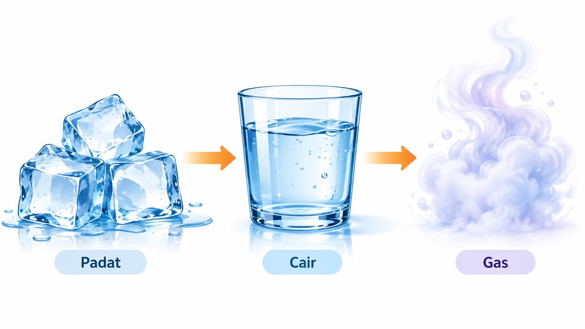

Mengapa es yang mencair dapat kembali menjadi es, sedangkan kertas yang dibakar tidak dapat kembali menjadi kertas?
Simpan jawaban awal Anda. Kita akan meninjaunya kembali setelah eksplorasi.
Jelajahi bagaimana zat memiliki wujud berbeda, bagaimana partikel direpresentasikan, dan mengapa suatu perubahan dapat bersifat fisika atau kimia.

Simpan jawaban awal Anda. Kita akan meninjaunya kembali setelah eksplorasi.
Mulai dari fenomena dan representasi yang dapat diamati.
Gunakan model partikel untuk menjelaskan apa yang tidak terlihat langsung.
Hubungkan pengamatan dengan konsep perubahan fisika dan kimia.